OnLoad
Onload event anropas när du laddar om sidan eller går in på den för
första gången. Vi använder det för att skapa Mario i canvas också för
att hälsa på den som kommer in på hemsidan.
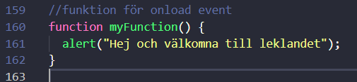
OnChange
OnChange event anropas när något värde ändrats och då kan man välja
vad man vill att sidan ska göra. t.ex. att skicka en Alert till sidan.
Då kommer en pop-up ruta med det meddelande man vill ska visas.
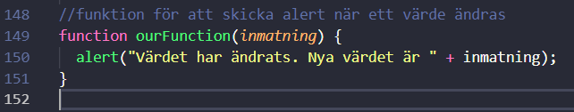
Click
Click event anropas varje gång du klickar med din mus. Det kan
användas till en massa olika saker men vi har det t.ex. till att göra
så att texten på raderna på lekstugan får annan backgrunds färg när
man klickar på dom

MouseOver
MouseOver event anropas när du rör musen över ett visst objekt. VI
använder det för att både få en ruta att byta färg/text och för att
Rita i Canvas rutan.
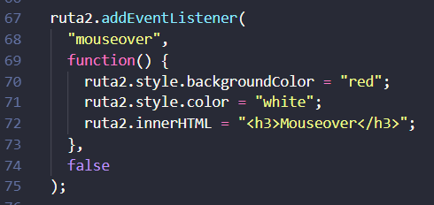
MouseOut
MouseOut event anropas när du rör musen bort från objektet. Den här
byter färg och text på rutan i Lekstugan men man kan ju få lite vad
som att hända.
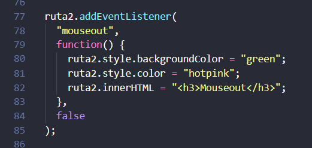
KeyDown
KeyDown event kommer anropas varje gång du trycker ner en tangent
eller anropas hela tiden när du håller ned en tangent.
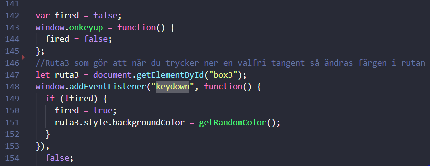
MouseDown
MouseDown event anropas när du håller ner vänster- eller höger-klick.
Så länge du håller ner vänster- eller höger-klick så kommer den att
fortsätta anropa eventet.
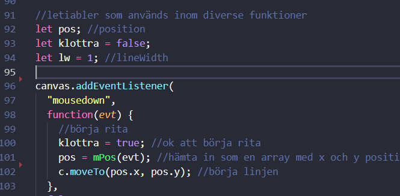
MouseMove
Mousemove event anropas när du rör på musen. Vi gjorde en rit ruta där
du kan rita med musen.
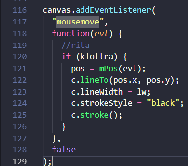
MouseUp
MouseUp event anropas när du släpper vänster- eller höger-klick.
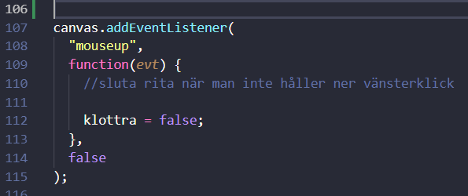
Touch med Hammer.JS
Hammer.js har ett bra biblotek för touch kod som kollar gester. Det
var svårt att få det att funka själv. Så vi bestämde att vi skulle
använda bibloteket så man kunde se hur det fungerar
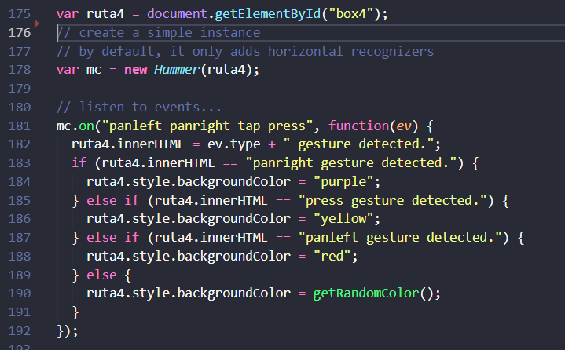
Färger
Här slumpar vi Färger med RGB så vi kan använda koden för att byta
färger om och om igen.
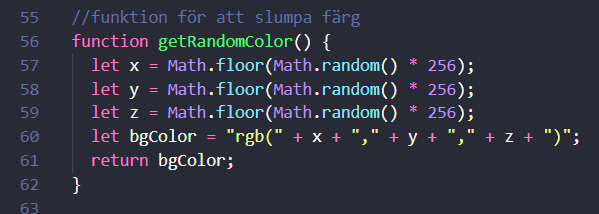
Canvas
Som sagt ovan använder vi onload för att skapa bilden då Canvas inte
kan rita den före den finns laddad till skillnad från img så med koden
nedan kan vi nu se Mario.
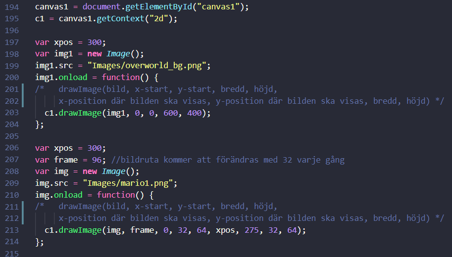